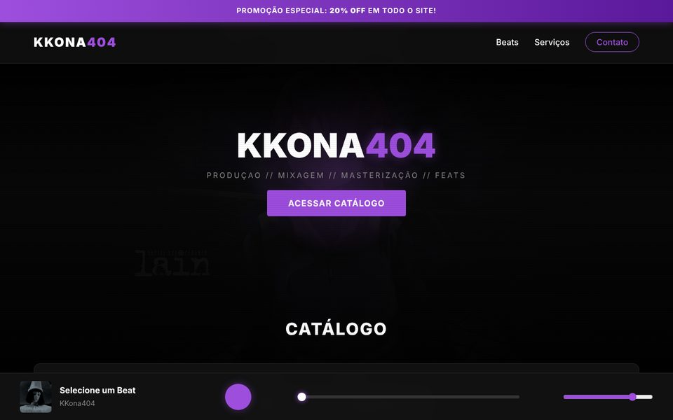

Desenvolvedor em formação · Python, front-end e bancos de dados
Estudante de Desenvolvimento de Software Multiplataforma, turma DSM-4.
Crio sites e aplicações web do zero e estou me especializando em
Inteligência Artificial para auxílio e otimização de tarefas.
Sites e aplicações feitos por mim, publicados e funcionando.
kkona404.netlify.app

/01
KKona404 · Beats & Services
Loja online de um produtor musical. Catálogo de beats com player e filtros por
gênero e BPM, licenças em MP3/WAV ou com stems, serviços de mixagem e
masterização, termos de uso e contato direto pelo WhatsApp.
Sistema privado de fichas para campanhas de RPG. Criação de personagem com rolagem
de dados, fichas com perícias, inventário, combate e dossiê, painel do mestre,
catálogo de equipamentos e acesso por chave, com dados salvos na nuvem.
JavaScript
MongoDB Atlas
Netlify
O botão abaixo cria uma ficha de teste na hora, que se apaga sozinha depois de 1 hora.
Pedra, papel e tesoura no navegador, com modo contra a máquina e modo
para dois jogadores, placar, cartas ilustradas e troca entre menu e tela de jogo.
Estou me aprofundando no uso de IA para auxiliar e otimizar tarefas: automatizar
trabalhos repetitivos, acelerar o desenvolvimento de código e criar soluções
que economizam tempo no dia a dia.
Python
Lógica de programação, scripts e automações para resolver problemas do dia a dia.
Front-end
Interfaces com HTML, CSS e JavaScript, responsivas para celular e computador e publicadas na web.
Bancos de dados
Consultas e modelagem em SQL e bancos não relacionais com MongoDB, incluindo o MongoDB Atlas na nuvem.
03 · Empresas
Onde eu trabalhei
Atual
São Joaquim
Mensageiro · Hotelaria
Atendimento a hóspedes e apoio à operação do hotel, com responsabilidade, organização e trabalho em equipe.
15 meses
Magazine Luiza (Magalu)
Jovem aprendiz · Tecnologia de segurança
Programa de aprendizagem na área de tecnologia de segurança, meu primeiro contato profissional com tecnologia.